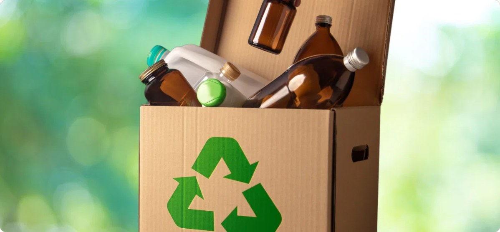

Actividades
Reciclaje, conciencia y acciones cotidianas
Hacemos cosas relacionadas con reciclar, reducir residuos y entender mejor el ciclo de vida de lo que usamos. Organizamos charlas, talleres y materiales visuales para que la información sea clara, útil y fácil de compartir.
Queremos que cada actividad sea una oportunidad para aprender, reflexionar y llevar a casa pequeños cambios que, juntos, puedan hacer una diferencia.

Lo que hacemos
Talleres, charlas y materiales
- Talleres de reciclaje creativo, como macetas hechas con envases reutilizados.
- Charlas sobre el agua, el suelo, la energía y la biodiversidad.
- Materiales visuales para compartir en la escuela y en redes.